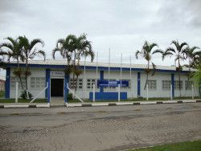
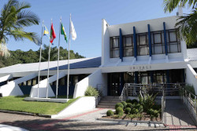

Estive, por muito tempo, acomodado com meu trabalho, pois estava recebendo em dia meu salário, não tinha muito do que reclamar a respeito disso, mas chegou um momento da minha vida que não aguento mais ter que me reportar a alguém todo dia, ter que dar explicações sobre algo todo final de tarde. Então voltei a fazer algo que eu me apaixonei desde o primeiro contato: programar.
Tive um primeiro contato com a programação quando fiz um curso no SENAI aqui da minha cidade, um curso de programador de computadores, curso voltado para aprendizagem dessa profissão que hoje em dia é muito requisitada. Aprendemos bastante coisa, desde CSS, HTML e JavaScript, e o curso foi muito bacana, mas não tive muito interesse na época de levar isso adiante, apesar de ter gostado muito da possibilidade de poder dar comandos para uma máquina e ela me obedecer.
Em 2015, assim que sai do ensino médio, já ingressei na minha primeira experiência acadêmica, com apenas 18 anos. Consegui uma bolsa de estudos para cursar Ciências da Computação em uma universidade da cidade ao lado, Itajaí. Estava super emplogado, pois na hora de decidir qual curso iria escolher, a paixão de programar voltou à tona, então decidi por levar pra frente a idéia de ser um programador formado e uma das universidades mais conceituadas da região.
Comecei o semestre e muitas coisas aconteceram nesses 6 meses, foram longos meses, meses que me deixaram bastante aflito. Desde a dificuldade de deslocamento até a cidade vizinha, até sofrer o primeiro assalto na vida, todas essas coisas foram me deixando triste, desmotivado, as aulas eram difíceis, e os professores não queriam saber se você estava realmente preparado, se a bagagem que você trouxe do ensino médio era suficiente para passar nas matérias... Ai, então, foi bomba atrás de bombas nas matérias voltadas à matemática, reprovei em 2 matérias, já no começo, e isso me fez perder a bolsa. Não consegui resistir ao primeiro semestre e o sonho de ser programador foi pelo ralo novamente
Em 2017, após fazer novamente o ENEM, tentei pela segunda vez uma graduação, mas dessa vez iria fazer algum curso que tivesse na universidade da minha cidade, pois não queria mais ter que me deslocar para outra cidade para estudar, a experiência já tinha sido traumatizante o suficiente. Porém, na minha cidade, os cursos disponíveis eram poucos, e a maioria voltados para áreas que não me interessavam, mas dentre esses cursos, havia o curso de marketing, cujo a grade involvia algumas coisas que me agradavam, visto que eu também tinha alguma vontade de trabalhar com o público em geral. Então decidi tentar.
Dessa vez consegui ir mais longe, de 5 semestres completei 3, mas perdi o tesão no curso, estava tudo muito maçante, não tinha mais forças para ir pra faculdade, e isso estava me matando por dentro, então, abandonei o curso faltando apenas 2 semestres para me formar... Mas vida que segue.
Hoje, 2021, estou aqui novamente, tentando mais uma vez me tornar um programador de sucesso, com esse curso atualizado do Guanabara, que até
o momento está sensacional, espero que consiga atingir meu objetivo, e dessa vez eu não vou desistir, não vou me deixar abalar, e quero deixar
isso aqui resgistrado, para que quando a vontade de desistir vier, eu lembre que eu trabalho em um lugar que eu odeio
e com algo que eu detesto.
Então, essa aqui é a chance que eu estou tendo de me reinventar e começar a fazer algo que eu gosto e levar isso como uma profissão. Agora, no
próximo tópico, irei praticar as listas, pois até agora já pratiquei tudo que poderia.
Nada melhor para começar a fazer listas do que vídeo games, e aqui vou listar alguns dos jogos que mais joguei e falar um pouco sobre eles para praticar um pouco as listas ordenadas, não ordenadas e de definição.
Vamos começar então com os jogos que mais joguei na época do PlayStation 2:
Agora os games que joguei bastante na época do PS3 e vou dar uma pequena descrição de como foi a experiência.
Bom, por hora acho que era isso, consegui aplicas bastante coisa que aprendi nas aulas nesse código, espero que em breve possa voltar aqui e atualizar com mais conteúdo, abraço.